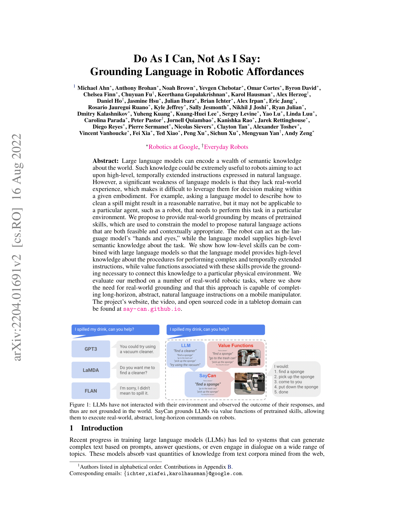
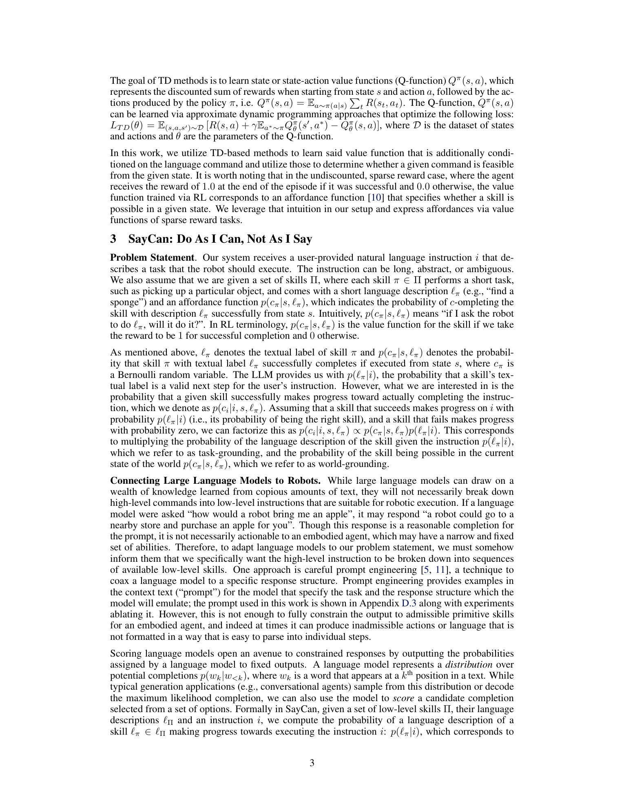

Do As I Can, Not As I Say: Grounding Language in Robotic Affordances
Michael Ahn, Anthony Brohan, Noah Brown, Yevgen Chebotar, Omar Cortes, Byron David, Chelsea Finn 외 37인 · Robotics at Google · Everyday Robots · CoRL 2022
LLM은 "무엇을 해야 할지"는 알지만 지금 이 상황에서 무엇이 가능한지는 모른다. SayCan은 LLM(=Say)의 스킬 유용성 점수 p(skill|instruction)과 value function(=Can)의 affordance 점수 p(success|skill, state)을 곱해 다음 스킬을 선택하는 매우 단순한 계획 프레임. 텍스트로 학습된 LLM이 로봇 스킬 라이브러리를 통해 "눈과 손"을 갖는다. 101개 실세계 인스트럭션(추상·다단계·부정문 포함)에서 PaLM-SayCan은 plan 성공 84% · 실행 성공 74%를 달성, LLM만 쓴 baseline 대비 크게 우위.
1배경 · 문제의식
대형 언어모델은 계획 지식과 상식을 풍부하게 담고 있으나, "부엌에서 사과가 어디에 있는지, 지금 로봇 팔로 컵을 정말 집을 수 있는지"에 대한 물리적 grounding이 없다. 예를 들어 "물을 흘렸어" 라는 지시에 LLM은 "청소기를 가져다 진공청소를 해라"라고 답할 수 있지만, 지금 이 로봇이 사용할 수 있는 스킬은 스펀지·수건 집기뿐일 수 있다. SayCan은 사전학습된 저수준 스킬 라이브러리와 각 스킬의 가치함수(성공 확률)를 활용해 LLM이 선택 가능한 스킬만을, 그 순간 실행 가능한 형태로 계획하게 한다.
2핵심 Contribution
SayCan 원리 — 스킬 π에 대해 p(π | instr)(LLM, "이 스킬이 지시를 진전시키는가")와 p(success | π, s)(가치함수, "이 스킬이 현재 상태에서 성공할 확률") 두 점수를 곱해 argmax로 다음 스킬을 뽑는 매우 심플한 planner. 별도 훈련 없이 LLM을 로봇에 결합.
모바일 조작에서 실사용 스킬 라이브러리 통합 — Everyday Robot 모바일 매니퓰레이터 상에서 pick·place·find·navigate 등 다수 스킬을 BC·RL로 학습, 각 스킬의 affordance는 학습된 Q-value로 근사.
다양성·규모 검증 — 101개 자연어 지시(추상·다단계·부정·의역·부탁형 포함, 최대 ~17 스킬 chain)로 사무실 주방 실환경 평가. LLM 스케일이 클수록(PaLM > FLAN > GPT-3 클래스) plan 정확도↑.
3Method
스킬 라이브러리 · Value Function
저수준 스킬은 "pick coke can", "go to counter", "put down apple" 등 짧은 자연어 라벨이 붙은 개별 policy πi. 각 πi는 image-based BC-Z + RL(오프폴리시)로 훈련되고, 훈련 중 학습되는 가치함수 Q(s,πi)가 곧 현재 상태에서의 affordance 근사가 된다. affordance 점수는 sigmoid로 정규화해 확률로 사용.
LLM Say 점수: 프롬프트 스코어링
LLM 프롬프트에 지시와 지금까지의 실행 히스토리를 넣고, 스킬 라벨을 후보로 두어 토큰 로그확률로 점수화. 여러 후보 스킬을 병렬 스코어링하고, 가장 유용한 것을 뽑는 대신 아래와 곱한다.
선택 규칙 (핵심 한 줄)
πt* = argmaxπ p(π | instr, h) · p(success | π, st)
"LLM이 유용하다 판단(Say) × 지금 실제로 성공 가능(Can)". 종료 스킬 "done"이 최고 점수면 계획 종료.
Chain-of-Thought / Instruction 확장
PaLM 대상으로 Chain-of-Thought 프롬프트(추론 이유를 앞에 서술)와 다국어/부정/명령 재구성도 실험. 어려운 지시("음식을 흘렸어, 도와줄래?")에서도 CoT가 plan 성공률을 유의미하게 올린다.
구현
로봇
Everyday Robot 모바일 매니퓰레이터 (7-DoF 팔 + 모바일 베이스)
스킬 수
551 (pick 30 + place/manipulate/navigate 등)
LLM
PaLM-540B (주 실험) · FLAN-137B · GPT-3 급 비교
평가 지시
101개 (사무실 주방 · 다단계 · 부탁형 · 추상 · 부정문)
4실험 결과
101개 인스트럭션 (모바일 매니퓰레이터, 표 5)
방법
Plan 성공률 (%)
실행 성공률 (%)
PaLM-SayCan (전체 문항 평균)
84
74
FLAN-SayCan
73
66
PaLM (affordance 제거)
73
—
Generative planner baseline
낮음
낮음
Plan = LLM이 뽑은 스킬 순서가 옳은가, 실행 = 실제 로봇 결과. Value function을 곱하면 plan은 물론 실행 성공까지 상승.
스킬 chain 길이 · 어려움 등급
길이 1~3 스킬 지시는 대체로 90%+, 8+ 체인(청소 다단계 등)에서도 40–60% 대로 상당한 성공. Chain-of-Thought 프롬프트는 "부정문/역설/취소" 어려운 지시에서 plan +10~15pp 향상.
Ablation 요지
Say only(affordance 없이): 로봇이 실제로 못하는 계획 자주 산출 → 실행 성공률 급락.
Can only(LLM 없이): 목표 없이 유의미한 순서를 못 만듦.
LLM 스케일↑ → plan 정확도↑. PaLM > FLAN > 소형 LLM. CoT 프롬프트 시 격차 더 벌어짐.
가치함수 오차의 취약성: value 학습 태스크 외 상태에서 affordance가 잘못되면 잘못된 스킬 선택. 실환경 새 물체·조명 변화 등.
고수준 상태만 사용: SayCan은 "어떤 스킬"만 뽑고, 저수준 실행은 각 스킬 policy가 담당. 스킬 자체가 실패하면 재계획은 다음 스텝에서 다시 argmax.
이후 후속작(RT-1/RT-2, PaLM-E, Inner Monologue)에서 스킬 policy·LLM 상호작용 형태로 대폭 확장.
6핵심 Figure / Table

Figure 1 (첫 페이지 티저) — "Say" × "Can" 프레임워크. LLM이 뽑은 스킬 유용성 확률과 가치함수의 affordance 확률을 곱해 지금 실제 가능하고 유용한 스킬을 매 스텝 선택하는 파이프라인. (출처: arXiv:2204.01691, PDF 렌더링)

Method 개요 (p.3 렌더링). 상단: 지시·히스토리 → 스킬 후보들의 LLM 스코어링. 하단: 각 스킬의 value function을 통한 affordance. 두 점수의 곱을 argmax하여 다음 액션을 선택. (출처: arXiv:2204.01691, PDF 렌더링)
SayCan의 핵심 수식은 매우 단순하지만, 그 단순함이 강점: LLM 재학습 없이(=zero-shot) 임의의 스킬 라이브러리와 결합 가능하고, 스킬 라이브러리를 늘리면 곧바로 새 능력을 얻는다. 이후 로보틱스 LLM planner 계열의 사실상 표준 baseline이 됨.